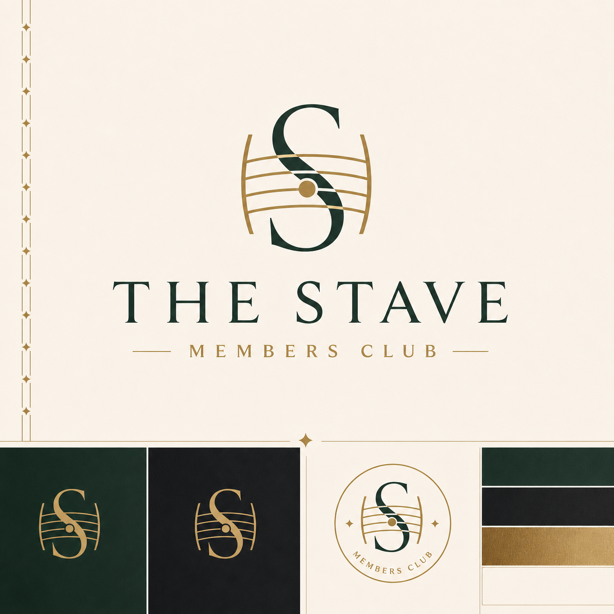
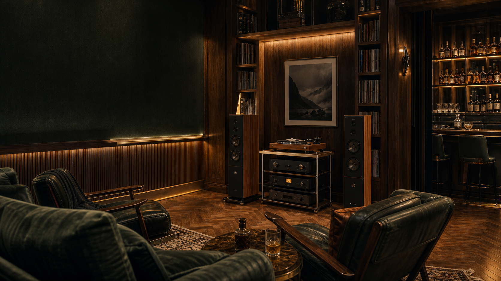
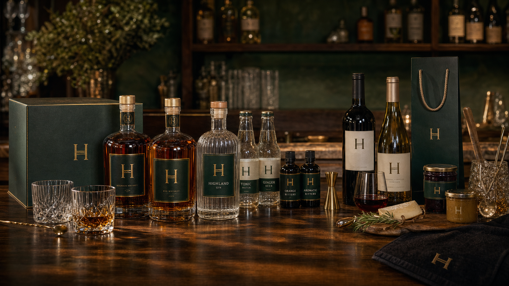

Whiskey, music, membership, and serious listening rooms.
The Stave is Hatfield's premium private club network: social floors, restaurants, bourbon bars, private rooms, event calendars, and one protected listening room in every club.

Club model
A social club with a stricter room inside it.
Club floors
Bars, lounges, dining rooms, terraces where the building allows it, and late service for members and guests.
Listening rooms
Recorded music played properly through a calibrated signal chain. No phones. No filming. No talking during playback.
Private rooms
Member dinners, album-week rooms, brand dinners, founder tables, fashion-week holds, and controlled late-night bookings.
Hatfield bar programme
Bourbon, rye, Cave Select, Highland Gin, Limestone Springs mixers, and estate wines create the house pour logic.
Open network
Eight cities, one operating standard.
Each club carries the local social register of its city while protecting the same listening-room rules, privacy expectations, and Hatfield supply standard.
Select a city to view the club register.
Request desk
Membership, guest, listening-room, and private-event requests.
This prototype behaves like a front-of-house request desk. It creates a local preview reference only; it does not send personal data, take payment, or connect to a reservations system.
Listening-room rules
- No phones out during playback.
- No talking once a session starts.
- Guest bookings require a sponsoring member or host review.
Dedicated identity
The Stave now carries its own visual language inside the Hatfield system: green, black, brass, serif typography, and music-line geometry.

House product logic
The clubs give Hatfield bourbon, Limestone Springs, wines, provisions, and barware a natural premium channel.